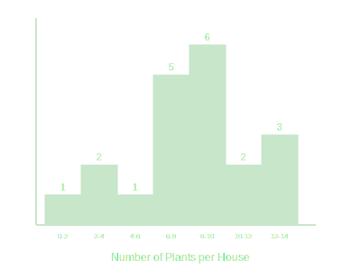

Example 1. The marks obtained by 30 students of Class X of a certain school in a
Mathematics paper consisting of 100 marks are presented in the table below. Find the mean of the marks
obtained by the students.

Given marks and number of students (fi).
Σfi = 30. Σfixi = 1779.
Mean = 1779 / 30 = 59.3.
Mean Marks = 59.3.
Example 2. The table below gives the percentage distribution of female teachers in the
primary schools of rural areas of various states and union territories (U.T.) of India. Find the mean
percentage of female teachers by all the three methods discussed in this section.

Direct Method: Mean = 39.71.
Assumed Mean: a = 50. Mean = 39.71.
Step Deviation: a = 50, h = 10. Mean = 39.71.
Mean Percentage = 39.71%.
Example 3. A survey conducted on 20 households in a locality by a group of students
resulted in the following frequency table for the number of family members in a household. Find the mode of
this data.

Mode Class is 3-5 (max freq 8).
l = 3, f1 = 8, f0 = 7, f2 = 2, h = 2.
Mode = 3 + [(8-7)/(16-7-2)] × 2
= 3 + (1/7) × 2 = 3 + 0.286 = 3.286.
Mode Family Size = 3.286.